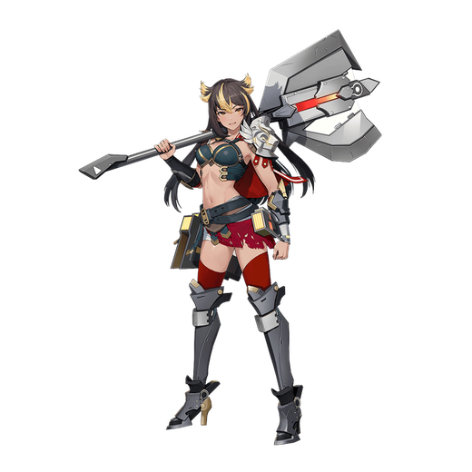

基本データ
- コスト
- 2.0
- 体力
- 未入力
- 赤ロック
- 29
- 動画
- 登録動画

Move Table
| 射撃 | 名称 | 弾数 | 威力 | 備考 |
|---|---|---|---|---|
| メイン射撃 | 巨斧ランチャー | 3(4) | 195 | 足を止めて撃つ、長押し・連打で連射可能 |
| サブ射撃 | 手斧投擲 | 1 | 180 | レバー横で曲線投擲。追加入力で回収 |
| 後格 | ライオン・ボム | 1 | 345 | 足を止めて撃つ単発強制ダウン武装 |
| 格闘 | 名称 | 入力 | 威力 | 備考 |
| メイン格闘 | ドーリア戦技 | NNN | - | 548 |
| サブ射派生 ドーリアの贈り物 | N→サブ射 | 522 | - | 相手を放置、爆発、着地可能 |
| NN→サブ射 | 654 | - | - | |
| NNN(1)→サブ射 | 712 | - | - | |
| サブ格派生 ライオン・ムーンリング | N→サブ格 | 677 | - | 切り上げ落下大車輪、切り上げダウンでも続ける |
| NN→サブ格 | 808 | - | - | |
| NNN(1)→サブ射 | 848 | - | - | |
| 横格闘 | ドーリア戦技 | 横NNN | 531 | 1段目伸びが良い |
| サブ射派生 ドーリアの贈り物 | 横N→サブ射 | 516 | - | - |
| 横NN→サブ射 | 630 | - | - | |
| サブ格派生 ライオン・ムーンリング | 横N→サブ格 | 706 | - | 切り上げ落下大車輪、切り上げダウンでも続ける |
| 横NN→サブ格 | 784 | - | - | |
| 前格闘 | ドーリア戦技 | 前 | 180 | 射撃シールド付き判定出っぱなし格闘 |
| サブ射派生 ドーリアの贈り物 | 前→サブ射 | 522 | - | 非強制ダウン |
| サブ格派生 ライオン・ムーンリング | 前→サブ格 | - | 782 | |
| N/横サブ格闘 | ライオン・トルネード | N/横サブ格 | 240 | 斧を振り回しながら前進、ヒット時打ち上げ、横レバーを入れると攻撃前に特殊移動を追加。 |
| 格闘派生 ライオン・パワーアタック | N/横サブ格→N | 240 | - | かち上げ1段格闘、スーパーアーマー |
| 後サブ格闘 | ライオン・ストライク | 後サブ格 | 90~336 | 飛び上がりからの叩きつけ、接地判定有り、サブ格闘と別弾数、４凸から着地する時Ｎ・横格闘へキャンセル可能 |
| バーストアタック | 名称 | - | 威力 | |
| F/B/SMD | 備考 | - | - | |
| バーストアタック | ライオン・バイト | - | 1084/990/900 |